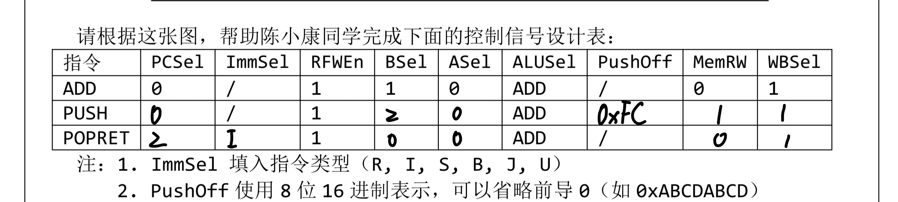
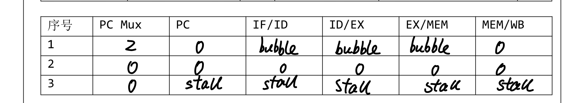

1.B 2.B
3. (1) 代码功能
初始化 a0=0, a1=1，循环 19 次做
a2=a0+a1
a0=a1
a1=a2
这是斐波那契数列迭代。循环结束后 a1=F20=6765，再把结果写到内存地址 256 处
(2)
动态指令条数：
入口 3 条：addi a0、addi a1、addi t1
循环体每次 5 条：add + 3 个 addi + bne
循环 19 次 → 19×5=95 条
出口 3 条：addi a0、addi t2、sw
总指令数 $$ N = 3 + 95 + 3 = 101 $$
流水线基础周期（无停顿）： 5 级流水线完成 N 条需要 (N+4) 周期 $$ 101 + 4 = 105 $$
分支停顿：
根据题目里面的提示，遇到分支 IF 一直 stall 到 EX 得到跳转地址，等价于 每条分支 2 个周期罚时。
循环中 bne 执行 19 次
$$
19 \times 2 = 38
$$
总周期： $$ 105 + 38 = 143\text{ cycles} $$
主频 50 MHz → 周期 20 ns $$ 143 \times 20\text{ ns} = 2860\text{ ns} \approx 2.86\ \mu s $$
（3）
bne 的实际走向：前 18 次 跳转，最后 1 次 不跳转。
两位饱和计数器初值 00（强不跳），预测序列会产生：
第 1 次：预测不跳，实际跳 → 错 第 2 次：预测不跳，实际跳 → 错（状态到 10） 中间 16 次：预测跳，实际跳 → 对 最后 1 次：预测跳，实际不跳 → 错
误预测 3 次。
预测命中时不再 stall；误预测在 EX 才发现并改 PC，仍需冲刷 IF/ID，每次误预测代价 2 周期。
新总周期： $$ 105 + 3\times 2 = 111\text{ cycles} $$
节省周期与时间： $$ 143-111 = 32\text{ cycles} $$ $$ 32 \times 20\text{ ns} = 640\text{ ns} = 0.64\ \mu s $$
约减少 $$ 32/143 \approx 22.4\% $$
（4）
BTB 对 jalr 返回地址只记第一次目标且不更新，后续 ra 变了仍预测旧地址，导致返回错。
4. （1） 
（2） a

b 不会引入新的 load-use 类型冲突。
rd： rd 的值由 ALU 在 EX 产生，下一条指令若使用 rd，可从 EX/MEM 或 MEM/WB 前传得到，不需要停顿。
rs1： rs1 只是普通 ALU 源操作数。若 rs1 依赖前一条 load，则这是任何 ALU 指令都会遇到的经典 load-use，不是 PUSH 特有
rs2： rs2 作为 store data 在 MEM 阶段才需要。 若前一条是 load 产出 rs2，则 load 在 MEM/WB 时数据已可前传到 PUSH 的 MEM 阶段，可以无停顿完成 因此 PUSH 不会额外制造类似 load-use 的冲突.